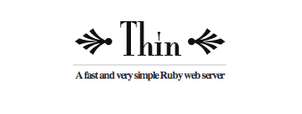
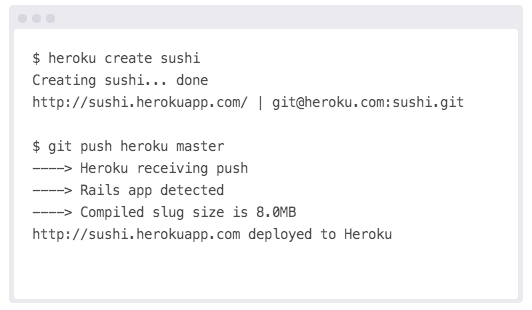
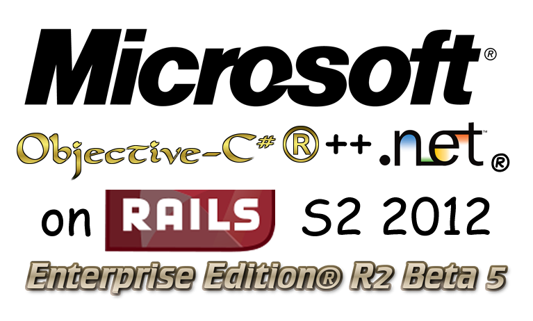

Ruby on Rails 4 vs. .NET MVC 5 Smackdown
November 2013, YYC Ruby Meetup
Ben Stevenson & Simon Timms/ @bennett_stevens @stimms
Hosting
Where your app lives
Roll your own
...but that's scary!
Server Options
- 
 * Recommended by Ben
* Recommended by Ben
Get someone else to do it...
The Monster of Managed Hosting
The Deal
- Managed Hosting Plans
- Scalable
- Addons
- Quick easy setup
How easy?
Sure...
A trial
Sure...
The Actual Steps
- Sign up
- Download and install the Heroku Toolbelt
-
> Forge:Projects bennett$ heroku login > Enter your Heroku credentials. > Email: the.benstevenson@gmail.com > Password (typing will be hidden): H4Ckz0r5 > Authentication successful.
OpenStack
Sounds sketchy...
Backers
All 2+ years ago, anything new?
-
The idea of Dockers, self contained code.
ORM
Just ActiveRecord?
Performance: Threading and the GIL
So there's this one little fact... MRI Ruby doesn't do multi-threads.
It doesn't matter!
- More than 1 Ruby.
- JRuby
We've got options!

No real options. All boils down to the same CLR VM
Makes it easy to do the right thing
- CDN Support built into framework
- Turbolinks
- Remove the views.
Where's the real cost in development?
- Developers, who in essence are people.
- You can build applications quicker, more streamlined.
- If you're chops are up to the task, without leaving the same terminal.
Cost
Pros
- Free
- Questions...?
Ok fine that was mildly loaded.
- Built open on all fronts.
- Swap and play.
- Options... my god the options.
- Don't like VI? Use Emacs.
- Don't like Emacs? Use Sublime or Text Mate
- I need the IDE look! Use RubyMine
But I like paying for my editors!
Built for Ruby, not the entire MS Family
With Windows
- Would you like a GUI with that?

Editor Templating vs. Scaffolding
On Rails: Options
- Stick with normal form helpers, they work.
- Use an alternative library
- Alterntative form builders can be customized for speicified CSS Frameworks
- Both support Bootstrap 2-3(beta)
A (Contrived) Example!
Default implementation in .NET
@Html.ValidationSummary(true)
@Html.LabelFor(m => m.UserName, new { @class = "col-md-2 control-label" })
@Html.TextBoxFor(m => m.UserName, new { @class = "form-control" })
@Html.ValidationMessageFor(m => m.UserName)
Formtastic (w/ Bootstrap 3 Support)
<%= f.semantic_errors %>
<%= f.inputs do %>
<%= f.input :username %>
<% end %>
Surely a nightmare to configure
gem 'formtastic-bootstrap'
# config/initializers/formtastic.rb
Formtastic::Helpers::FormHelper.builder = FormtasticBootstrap::FormBuilder
# app/assets/stylesheets/application.css
*= require formtastic-bootstrap
Once again options...
Or with Zurb Foundation
gem 'formtastic-zurb-foundation'
Or with simple_form
rails generate simple_form:install --bootstrap
Or with simple_form and Zurb
rails generate simple_form:install --foundation